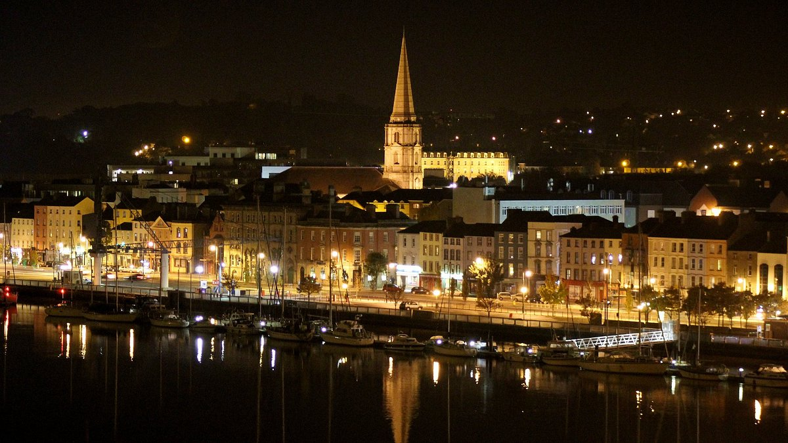

Los Alcantilados de Moher son considerados como la principal atracción turística de Irlanda. Esto es debido a majestuosa vista y las imponentes formaciones rocosas que lograrás ver en ellos. Se ubica en la parte oeste, en el territorio de Clare y la manera fácil de llegar a ellos es en coche particular o con un paquete turístico.
Es un maravilloso sitio turístico que posee espectaculares miradores y un alargado sendero para recorrer todo el territorio de cerca admirando toda su belleza. Al estar hacia el lado oeste sus paredes calizas estarán más iluminadas en las horas de la tarde, es por ello que al atardecer es donde Moher te ofrece las mejores fotos de tu viaje
Killarney es una ciudad que se ubica en el Territorio de Kerry, al suroeste de Irlanda y sobre la orilla noreste del Lago Lein. Conforma una de las maravillosas paradas del Anillo de Kerry y representa un completo destino turístico digno de conocer. Llegar a ella será muy sencillo, solo deberás tomar el tren en Dublín en un recorrido de tres horas aproximadamente.
Uno de los atractivos naturales de Irlanda con el que te deleitarás en el viaje es el Parque Nacional de Killarney, una maravillosa reserva que cuenta con tres grandes lagos los cuáles se unen en el Meeting of the Waters. Forma un paraje majestuosamente impresionante rodeado de enormes bosques naturales dignos de admirar.

Waterford es una ciudad históricamente soleada al sureste de Irlanda que forma parte de la provincia de Munster. Es la localidad más antigua de Irlanda con orígenes vikingos donde todavía se pueden apreciar restos de la época medieval. Para acceder a ella deberás tomar un autobús desde la localidad Kilkenny y en un recorrido de 40 minutos ya estarás ahí.
Una de las murallas vikingas es la Torre de Reginald, una maravillosa torre de defensa del periodo XIII. Una vez dentro lograrás encontrar una increíble colección de tesoros antiguos utilizados en la época como espadas vikingas y juegos de mesas ancestrales, los cuales representan solo una muestra de la maravillosa colección del sitio.
El Anillo de Kerry es un recorrido turístico por todo el territorio de Kerry, al suroeste de Irlanda. Con el circuito conocerás diferentes miradores y parques nacionales, con una excursión que dura un día en bus turístico o en coche. Para lograr hacer el circuito deberás tomar un tour turístico en el centro de Dublín.
En la ruta del Anillo de Kerry vas a estar siempre rodeado de enormes carreteras repletas de buses turísticos y maravillosos bosques con apacibles siervos rojos, además de hermosos pueblos y espectaculares parajes llenos de construcciones milenarias cargadas de tradiciones.
El Parque Nacional The Burren que significa Lugar Pedregoso, está ubicado al noroeste del territorio de Clare. Llegarás a él en carro desde Dublín por la carretera M6, en un recorrido de aproximadamente tres horas.
Al llegar te toparás con espectaculares formaciones rocosas compuestas de piedras de color gris claro que forman riscos y acantilados en miniatura y se extienden hasta el horizonte como hermosos mosaicos rocosos. Verás además, diversos asentamientos arqueológicos y restos históricos con 90 tumbas megalíticas.
El Valle de Glendalough que significa el Valle de los Mil Lagos, es un maravilloso asentamiento espiritual que está situado en el territorio de Wicklow, a 30 minutos en carro particular desde Dublín, Irlanda.
Glendalough es un espléndido y espiritual valle rodeado de la más pura y hermosa naturaleza, con dos lagos misteriosos y oscuros cubiertos de bosques. Fungió como un monasterio que fue fundado por un monje llamado Kevin que se aislaba en el valle para meditar.
La Montaña de Croagh Patrick es un pico cubierto de pedregales que es considerado el centro de peregrinación más importante de Irlanda. Está ubicada a las afueras de la localidad de Westport, específicamente en la Ruta Costera.
.jpg)
.jpg)
.jpg)
.jpg)
.jpg)